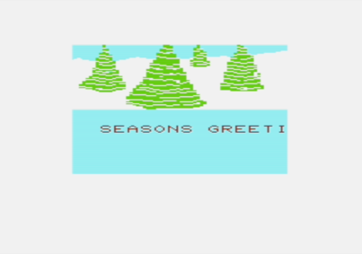
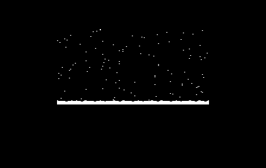
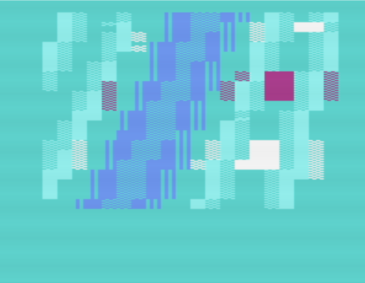
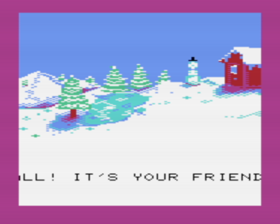
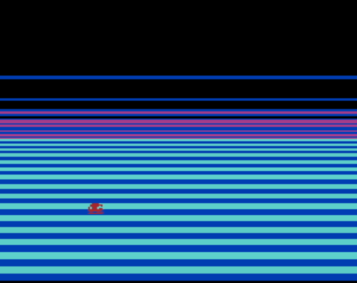
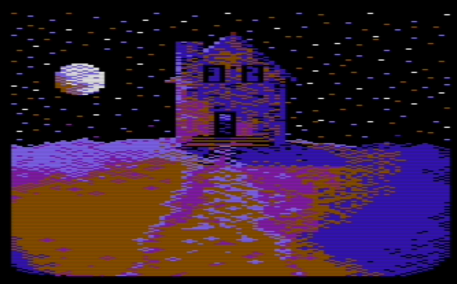
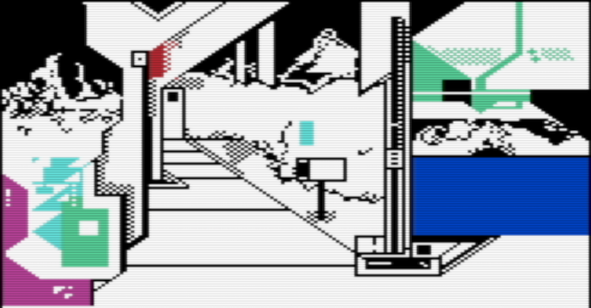
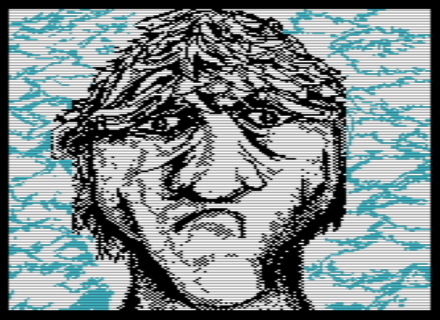
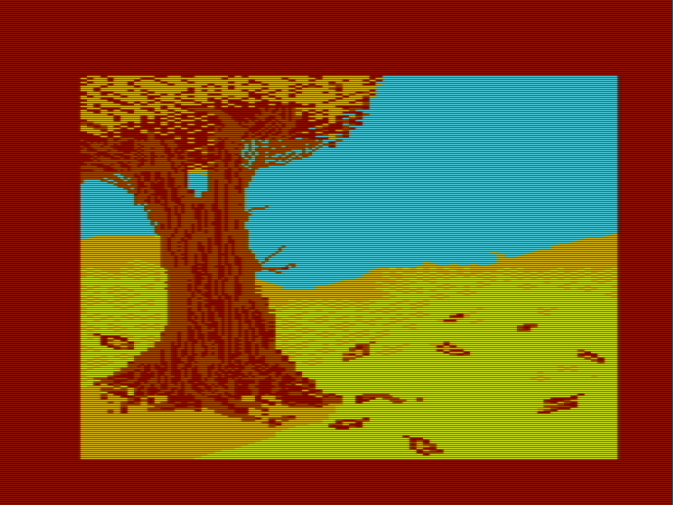

Here is a list of some projects that I've actually finished. Unfortunately, you can see some of the many unfinished projects I've started in the horrific graveyard that is my github. X(
All the projects listed here are for the Vic-20, the friendly computer. =)
Since I began coding, my dream was to write amazing demos for Commodore 64. Edge of Disgrace by Booze Design was especially influential. In those early days, I was cutting my teeth on Z-80 assembly for the TI-83/84+ graphing calculators, but I finally did get my own Commodore machine in March of 2009: a Commodore Vic-20. Quite comically, the decision to buy a Vic instead of a C64 came down to cost even 25 years past both of the machine's relevance. I'm still pretty far from releasing anything notable, but it remains a goal of mine to oneday release something I'm truly proud of, in that "beat this" sort of scene way, at a major demo party.
Anyway, here are the demos I've made. All two of them are seasonal demos. Turns out having a hard deadline is pretty important in actually releasing a prod. For me, that deadline has been Christmas. Somewhere out there, there exist the beginnings of a Christmas demo for the years 2010, 2011, and 2013, but I'm pretty happy to have been able to finish these two.
Fair warning: these are not good. In fact, they're quite bad- especially in the audio department. But if I don't archive them somewhere even I am sure to forget of their existence. I actually had to hunt down an archive of the Vic 20 Demobase, which itself has been abandoned, to find a copy of the '09 demo, which has apparently been evicted from its original home on my Microsoft Live drive.
 
This was a weekend project I made my last year of high school. I was pretty proud to show it off to my family at the time, and I've played it for them on a few Christmas Eve's since. :) Despite its rough edges, I received very warm feedback from the community upon its release. I will always love the Vic-20 community for its kindness.
  
Another Christmas demo rushed together after graduating college. This one features some decent effects IMHO. I started it with a chunky plasma that is recycled from a 8x4 plasma I made in my freshman year of college. I think the 8x4 is a lot cooler because it requires cycle counting, but since this demo was mainly made for my family and parents, I decided to go with a bigger effect. The chunky effect is also more PAL friendly. I put a massive scrolltext in the middle; classic demo effect gotta have it. Sometimes I feel that the older I get the less I have to say, but something about the demo platform makes it comfortable to say what's on your mind. In large part because you know that only people that really want to bother to hear what you have to say will read it. I concluded the demo with a rasterbar effect with a cut little software sprite. Rasters have got to be the coolest effect "live". I once heard it phrased that they look cool because they go from the "faaaaaar" edge of the screen to the "faaaaar" opposite end. The impact of seeing all that color is something else. The Vic-20 has an expandable screen, so its not quite as impactful as on a C64, but it's still impressive to see the phosphor light up from the moment the beam touches the left end of the glass!
Here's some mostly old pics for the ol' Vic. Sadly, I don't have the MINIPAINT files for most of them anymore, but I pixelled them on an emulator, improper aspect ratio and all as you can see on the Haunted House. So, if you take these for "art", this is how they're intended to be viewed! =D
   